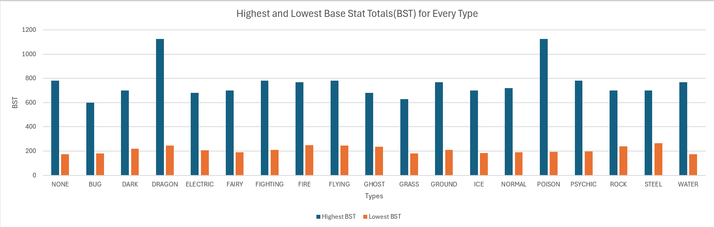

Assignment 1
This dataset provides data for all 1025 Pokemon and their different forms. Some of the Pokemon get forms that either increase or decrease one of their stats. The first chart provides insight into a Pokemon's BST, which is a Pokemon's HP (health points), Attack, Defense, Special Attack, Special Defense, and Speed.
Bar Chart
The bar chart shows the highest and lowest BST for each type. The data also shows a NONE option and that is because there are Pokemon who do not have a secondary type. However, the chart doesn't really give us much to work with. If anyone is to take something away from this, its that Dragon and Poison have a Pokemon with a really high BST.